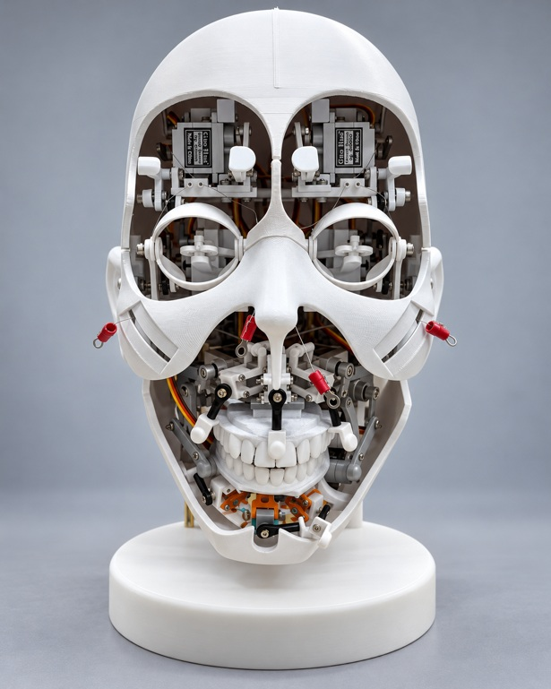
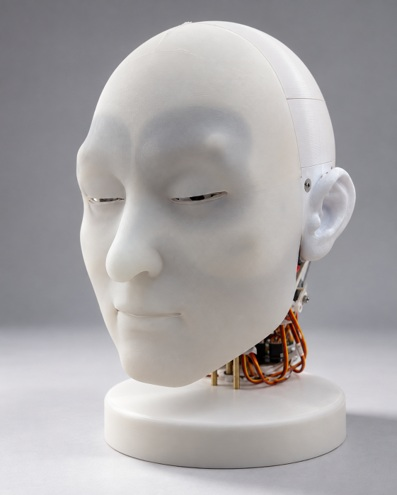
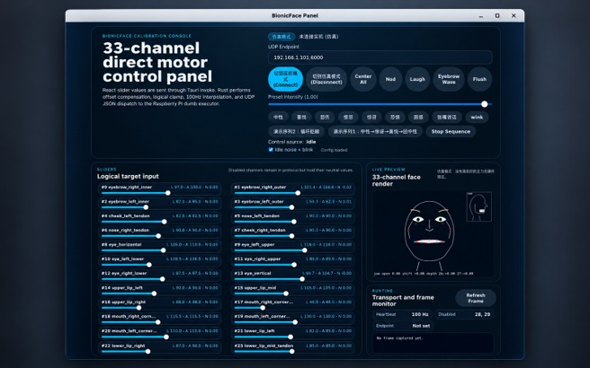

XJTLU · Oct 2025–present · Undergraduate Researcher · Advisor: Jie Sun
Biomimetic Facial Robot Design and Control
Rebuilt and adapted an open-source animatronic face with the team, connecting expression mechanisms with programmable servo positions and coordinated facial poses.

My contributions
Mechanisms and facial-skin moulds
Reworked cheek linkages and the connections controlling upper and lower jaw opening. Revised CAD geometry for facial-skin moulds and supported fabrication, fitting and assembly of the modified head.
Communication and coordinated motion
Implemented per-degree-of-freedom position commands through a communication interface. Coordinated multiple actuators into automated facial-expression sequences and preset poses.
Structure, exterior and control interface
Selected views from the project materials. Select an image to inspect it at full size.






Platform and availability
The project adapts the Morpheus hardware platform. The base platform is credited to its original authors; the mechanism changes, mould adjustments and control integration above describe my contribution.
Images are selected from the supplied project materials. Project-specific implementation code and design files remain private.